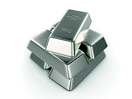
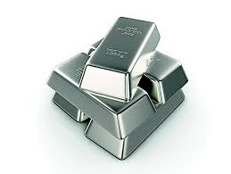

.jpeg.jpg) 

1. Silver
Silver, as an investment asset, holds a prominent position in the realm of commodities and precious metals. Its status as a precious metal grants it inherent value, appealing to investors seeking to safeguard their wealth against inflationary pressures and economic uncertainty. Through various investment vehicles such as physical silver, exchange-traded funds (ETFs), futures contracts, and mining stocks, investors can gain exposure to the silver market. These investment options offer flexibility and cater to diverse investor preferences, whether they seek direct ownership of physical silver or prefer exposure through financial instruments.
The price of silver is influenced by a myriad of factors, including supply and demand dynamics, macroeconomic indicators, geopolitical events, and industrial usage. Silver's dual nature as both a monetary asset and an industrial metal means its price can respond to a wide range of market forces. Industrial demand, particularly in sectors like electronics and renewable energy, plays a significant role in shaping silver prices alongside investment demand. Moreover, silver's historical price performance has exhibited volatility, offering both opportunities and risks for investors. While silver has historically shown correlation with gold prices, its higher volatility often leads to amplified price movements, presenting both challenges and opportunities for investors seeking to capitalize on market fluctuations.
Despite the potential for attractive returns, investing in silver carries certain risks that investors must carefully consider. Price volatility, market liquidity, regulatory changes, and storage/security concerns are among the key factors that can impact the profitability and stability of silver investments. Investors should conduct thorough research, assess their risk tolerance, and formulate a well-defined investment strategy before allocating capital to silver. While silver can serve as a valuable diversification tool within an investment portfolio, prudent risk management and a long-term perspective are essential for navigating the complexities of the silver market effectively.
2. Why Choose Silver?
Investors choose silver for several compelling reasons, making it an attractive addition to investment portfolios. Firstly, silver offers diversification benefits, helping to mitigate overall portfolio risk. Its low correlation with other asset classes, such as stocks and bonds, means that silver's price movements often behave independently, providing a hedge against market volatility. Additionally, silver serves as a store of value and a hedge against inflation, much like gold. Its scarcity, combined with its intrinsic value and historical role as a form of currency, bolsters its appeal as a wealth preservation asset.
Moreover, silver's dual role as both a monetary metal and an industrial commodity enhances its investment appeal. While its monetary properties make it a safe haven during times of economic uncertainty, its industrial applications in sectors like electronics, renewable energy, and healthcare create steady demand. This unique combination of attributes positions silver as a versatile investment asset capable of delivering both capital appreciation and downside protection in varying market conditions.
Furthermore, silver's relatively lower price compared to gold makes it more accessible to a broader range of investors. With a lower entry barrier, investors can allocate smaller amounts of capital to silver, facilitating portfolio diversification and risk management strategies. Additionally, silver's historical price performance has demonstrated significant upside potential, particularly during periods of economic turmoil or inflationary pressures, providing investors with opportunities for capital growth.
In summary, investors choose silver for its diversification benefits, inflation hedging properties, industrial demand, affordability, and potential for capital appreciation. By incorporating silver into their investment portfolios, investors can enhance portfolio resilience, capitalize on market opportunities, and safeguard their wealth over the long term.
3. Historical Performance
Silver has a long history of being used as currency and as a store of value. It has shown resilience during times of economic turmoil and has often outperformed other assets. For example, during the global financial crisis of 2008, silver prices experienced significant gains as investors sought safe-haven assets.
4. Correlation with Other Assets
Silver prices can exhibit growth under various market conditions, propelled by factors that influence its demand and supply dynamics. As a precious metal, silver often serves as a safe-haven asset during times of economic uncertainty or geopolitical instability. Investors tend to flock to silver as a store of value and a hedge against market volatility, driving up demand and consequently, prices. Additionally, silver's role as a hedge against inflation makes it attractive during periods of rising prices or currency devaluation. Its intrinsic value tends to hold up well in inflationary environments, prompting investors to allocate capital to silver as a means of preserving wealth. Furthermore, silver's industrial applications in electronics, photovoltaics, and healthcare contribute to its demand. Advances in technology and government initiatives supporting renewable energy can bolster industrial demand for silver, pushing prices higher. Supply constraints, such as disruptions in mining production or regulatory changes, can also tighten the supply of silver, further fueling price growth. Overall, silver prices are influenced by a complex interplay of economic, geopolitical, and industrial factors, making it a dynamic asset class for investors seeking diversification and potential capital appreciation.
5. Hedging
Investors often use silver as a hedge against various economic risks:
Inflation: Silver can retain its value during periods of inflation, preserving purchasing power.
Currency Devaluation: Silver tends to appreciate when fiat currencies lose value, providing protection against currency devaluation.
Market Volatility: Silver's stability can mitigate the effects of market volatility, helping to reduce overall portfolio risk.
Using silver for hedging involves strategically incorporating it into an investment portfolio to mitigate various risks and uncertainties. One primary function of silver as a hedge is its ability to counteract the effects of inflation. Historically, silver prices have demonstrated a positive correlation with inflationary pressures, making it a valuable asset for preserving purchasing power when fiat currencies depreciate. Additionally, silver serves as a hedge against currency devaluation, especially during times of economic instability or geopolitical turmoil when fiat currencies may weaken. By holding silver, investors can safeguard the value of their wealth denominated in fiat currencies and diversify their currency exposure.
Moreover, silver functions as a hedge against market downturns and volatility. During periods of economic recession or financial crisis, traditional assets like stocks and bonds often experience significant declines, while silver tends to retain its value or even appreciate. Its status as a safe-haven asset attracts investors seeking refuge from market turbulence, thereby providing stability and downside protection to investment portfolios.
Furthermore, silver serves as a hedge against geopolitical risks and uncertainty. Geopolitical tensions, conflicts, or geopolitical events can disrupt financial markets and impact asset prices. Silver's intrinsic value and historical role as a store of wealth make it a preferred asset during times of geopolitical turmoil, offering investors a means to diversify risk and preserve capital.
In summary, using silver for hedging involves leveraging its properties as an inflation hedge, currency hedge, and safe-haven asset to mitigate specific risks within an investment portfolio. By strategically allocating to silver, investors can enhance portfolio resilience, protect against downside risks, and potentially improve risk-adjusted returns over the long term.